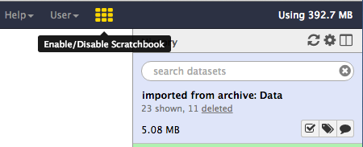
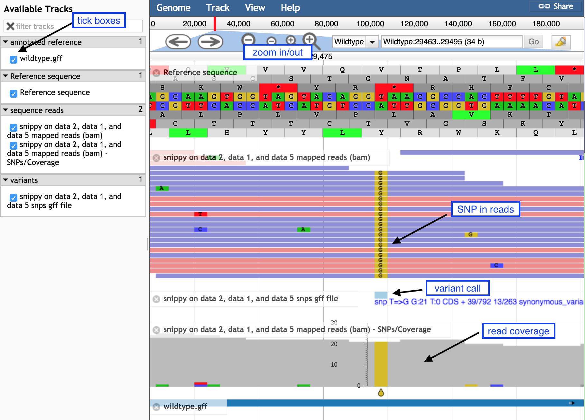

Variant calling with Snippy
Background
Variant calling is the process of identifying differences between two genome samples. Usually differences are limited to single nucleotide polymorphisms (SNPs) and small insertions and deletions (indels). Larger structural variation such as inversions, duplications and large deletions are not typically covered by “variant calling”.
Learning Objectives
- Find variants between a reference genome and a set of reads
- Visualise the SNP in context of the reads aligned to the genome
- Determine the effect of those variants on genomic features
- Understand if the SNP is potentially affecting the phenotype
Prepare reference
For variant calling, we need a reference genome that is of the same strain as the input sequence reads.
For this tutorial, our reference is the
If these files are not presently in your Galaxy history, import them from the Training dataset page.
Call variants with Snippy
- Go to
Tools → NGS Analysis → NGS: Variant Analysis → snippy - For
Reference type select Genbank. - Then for
Reference Genbank choose thewildtype.gbk file. - For
Single or Paired-end reads choose Paired. - Then choose the first set of reads,
mutant_R1.fastq and second set of reads,mutant_R2.fastq . - For
Cleanup the non-snp output files select No.
Your tool interface should look like this:

- Click
Execute .
Examine Snippy output
First, enable “Scratchbook” in Galaxy - this allows you to view several windows simultaneously. Click on the squares:

From Snippy, there are 10 output files in various formats.
- Go to the file called
snippy on data XX, data XX and data XX table and click on the eye icon. - We can see a list of variants. Look in column 3 to see which types the variants are, such as a SNP or a deletion.
- Look at the third variant called. This is a T→A mutation, causing a stop codon. Look at column 14: the product of this gene is a methicillin resistance protein. Methicillin is an antibiotic. What might be the result of such a mutation?
View Snippy output in JBrowse
-
Go to
Statistics and Visualisation → Graph/Display Data → JBrowse -
Under
Fasta Sequence(s) choosewildtype.fna . This sequence will be the reference against which annotations are displayed. -
For
Produce a Standalone Instance select Yes. -
For
Genetic Code choose 11: The Bacterial, Archaeal and Plant Plastid Code. -
We will now set up three different tracks - these are datasets displayed underneath the reference sequence (which is displayed as nucleotides in FASTA format). We will choose to display the sequence reads (the .bam file), the variants found by snippy (the .gff file) and the annotated reference genome (the wildtype.gff)
Track 1 - sequence reads
- Click
Insert Track Group - For
Track Cateogry name it “sequence reads” - Click
Insert Annotation Track - For
Track Type choose BAM Pileups - For
BAM Track Data selectthe snippy bam file - For
Autogenerate SNP Track select Yes
Track 2 - variants
- Click
Insert Track Group again - For
Track Category name it “variants” - Click
Insert Annotation Track - For
Track Type choose GFF/GFF3/BED/GBK Features - For
SNP Track Data selectthe snippy snps gff file
Track 3 - annotated reference
- Click
Insert Track Group again - For
Track Category name it “annotated reference” - Click
Insert Annotation Track - For
Track Type choose GFF/GFF3/BED/GBK Features - For
SNP Track Data selectwildtype.gff -
Under
JBrowse Styling Options → JBrowse style. description type in product,note,description -
Click
Execute -
A new file will be created, called
JBrowse on data XX and data XX - Complete . Click on the eye icon next to the file name. The JBrowse window will appear in the centre Galaxy panel. -
On the left, tick boxes display the tracks
-
Use the minus button to zoom out to see:
- sequence reads and their coverage (the grey graph)
-
Use the plus button to zoom in to see:
- probable real variants (a whole column of snps)
- probable errors (single one here and there)

- In the coordinates box, type in 47299 and then
Go to see the position of the SNP discussed above.- the correct codon at this position is TGT, coding for the amino acid Cysteine, in the middle row of the amino acid translations.
- the mutation of T → A turns this triplet into TGA, a stop codon.